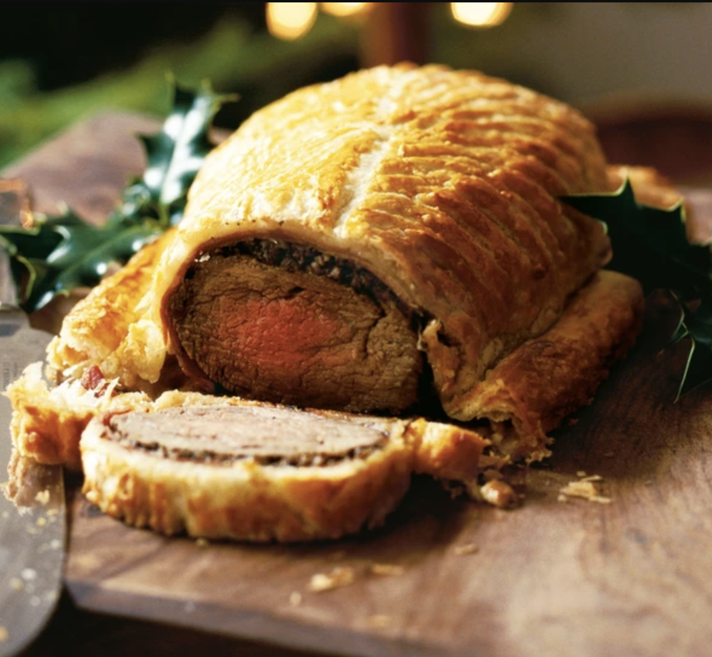

Beef Wellington

Description
Gordon Ramsay's version of the classic steak dish – a showstopping centrepiece on a special occasion.
Ingredients
- beef fillet
- olive oil
- chestnut mushroom
- butter
Steps
- Heat oven to 220C/fan 200C/gas 7.
- Sit the 1kg beef fillet on a roasting tray, brush with 1 tbsp olive oil and season with pepper, then roast for 15 mins for medium-rare or 20 mins for medium. When the beef is cooked to your liking, remove from the oven to cool, then chill in the fridge for about 20 mins.
- While the beef is cooling, chop 250g chestnut (and wild, if you like) mushrooms as finely as possible so they have the texture of coarse breadcrumbs. You can use a food processor to do this, but make sure you pulse-chop the mushrooms so they don’t become a slurry.